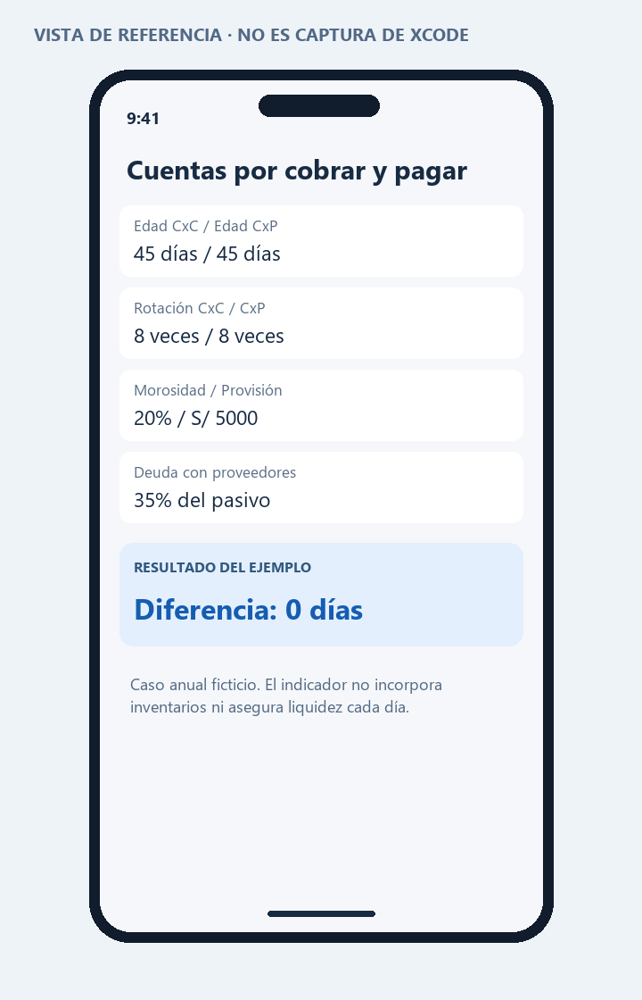

PROGRAMACIÓN EN MÓVILES AVANZADO · S08
08 · Trabajo grupal: cuentas por cobrar y pagar
Corresponde a las páginas 13–15. La guía contiene fórmulas repetidas y fracciones desordenadas. Se normalizan con el numerador y denominador que corresponden a cada indicador. Se incluye un caso anual resuelto y una aplicación independiente como apoyo.
Datos del caso
Empresa ficticia Aula Servicios. Ejercicio anual de 360 días. Todas las cifras son datos académicos inventados para probar las fórmulas, no información real de una empresa. Ventas y compras corresponden solo a operaciones a crédito, con bases contables comparables.
| Dato | Importe |
|---|
| CxC inicial / final | S/ 80000 / S/ 100000 |
| Ventas a crédito anuales | S/ 720000 |
| CxC vencidas al cierre | S/ 20000 |
| Incobrabilidad estimada | 5% |
| CxP inicial / final | S/ 50000 / S/ 70000 |
| Compras a crédito anuales | S/ 480000 |
| Pasivos totales al cierre | S/ 200000 |
Desarrollo de todas las fórmulas
| Indicador | Sustitución | Resultado |
|---|
| CxC promedio | (80000 + 100000) / 2 | S/ 90000 |
| Edad promedio CxC | 90000 × 360 / 720000 | 45 días |
| Rotación CxC | 720000 / 90000 | 8 veces/año |
| Índice de morosidad | 20000 / 100000 × 100 | 20% |
| Provisión de incobrables | 100000 × 5% | S/ 5000 |
| CxP promedio | (50000 + 70000) / 2 | S/ 60000 |
| Edad promedio CxP | 60000 × 360 / 480000 | 45 días |
| Rotación CxP | 480000 / 60000 | 8 veces/año |
| Endeudamiento por proveedores | 70000 / 200000 × 100 | 35% |
| Diferencia de plazos | 45 − 45 | 0 días |
Interpretación
La empresa tarda aproximadamente 45 días en cobrar y 45 en pagar. La diferencia de plazos es cero, pero eso no garantiza liquidez diaria: los vencimientos concretos pueden estar concentrados. La morosidad del 20% exige revisar clientes vencidos y acuerdos de cobro. El 35% de los pasivos corresponde a proveedores, lo que identifica una fuente relevante de financiamiento.
La provisión del 5% produce S/ 5000 y cumple la fórmula del ejercicio. Ese porcentaje debe sustentarse antes de usarlo en contabilidad real; el cálculo no constituye una evaluación completa de deterioro o de deducibilidad tributaria.
Comparación de plazos
| Escenario, manteniendo promedios | Edad CxC | Edad CxP | Diferencia | Lectura |
|---|
| Ventas 720000; compras 480000 | 45 | 45 | 0 | Plazos promedio iguales. |
| Ventas bajan a 540000 | 60 | 45 | 15 | Se cobran 15 días después del plazo medio de pago. |
| Compras bajan a 360000 | 45 | 60 | −15 | Plazo de proveedores mayor al de cobranza. |
La diferencia de la guía omite días de inventario. No debe llamarse ciclo completo de conversión de efectivo sin añadir ese componente. Una rotación alta tampoco demuestra por sí sola buena gestión: podría reflejar condiciones comerciales muy restrictivas.
Controles y pruebas
- Divisor cero: mostrar “No definido”, no cero ni infinito.
- Vencidas mayores que CxC total: rechazar.
- Proveedores mayores que pasivos totales: rechazar.
- Porcentaje fuera de 0–100: rechazar.
- Usar el mismo período en flujos y saldos. Para períodos no anuales, ajustar días; esta aplicación trabaja el caso anual de 360 días.
Organización para dos integrantes
Propuesta de reparto, sin atribuir trabajo no realizado: integrante A valida cuentas por cobrar, vencimientos y morosidad; integrante B valida cuentas por pagar, proveedores y compras. Ambos revisan los divisores, comparan plazos y sustentan las conclusiones. Los nombres y evidencias de participación deben ser completados por los estudiantes.
Código y ejecución
Abre Proyecto/CuentasS08.xcodeproj en Xcode 15 o posterior, con un simulador iOS 17 o posterior. El código principal está en Proyecto/CuentasS08/CuentasView.swift. Consulta las instrucciones de ejecución.
La estructura de proyecto está preparada. La compilación y las capturas reales quedan pendientes de ejecutar en una Mac; no se presentan como pruebas realizadas.
Vista de referencia
Representación de la interfaz y los datos de ejemplo. No es una captura del simulador. La vista ejecutable se encuentra en el archivo SwiftUI y en su #Preview.
